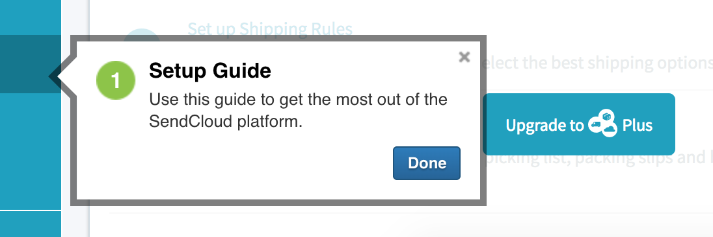
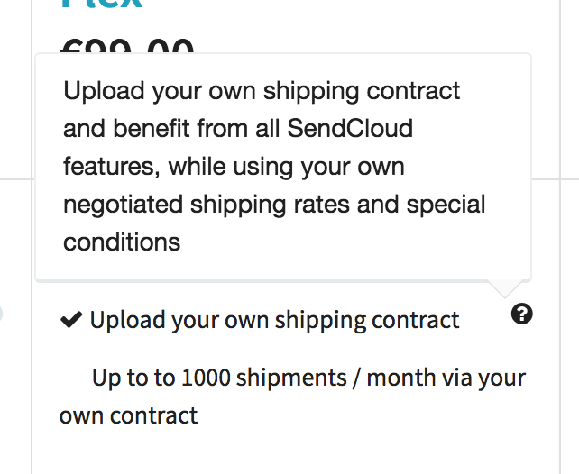
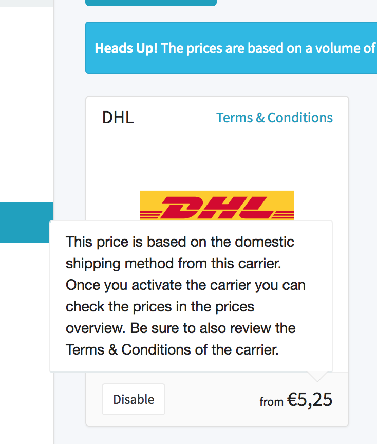
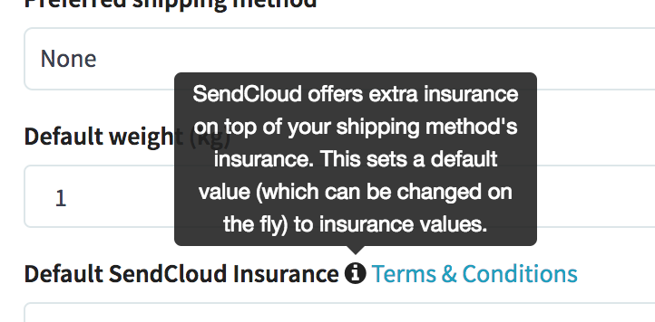

What is this all about?
The other day during my initial interview Isa asked me the good old “What can you bring to the table?” question and I felt like She's not convinced enough so I figured coming up with something small would be nice on my behalf. So here we go.
In my experience tooltips are always a grateful topic because seems like they are those nasty little guys everyone forgets. When a dev team wants to use one of them no one really does a research whether they already exist in the design ecosystem or not. The Product Owners are not really concerned, UX guys say it should be compact and informative and the Designer probably has some shady memories about using one of the tooltips somewhere - mostly on the feature list of the Pricing Plans page - but the current one would be used on a form so it shouldn't stand out that much. And there you go, in no time you've got different...
...Tooltips everywhere!
When you create a new account and you got some neat onboarding, look who welcomes you?
This guy.
And by his additional attributes it seems like he's a special one:
- visible by default — for the first time at least
- featuring a (green) marker no. 1 — I haven't found no. 2 yet
- a closing “X” — possibly makes this tooltip go away
- a (unstyled Bootstrap) mini button — probably closes the entire onboarding
- edgy, semi-transparent borders
- left-aligned text
- an extra title
I've found the next (kind of) tooltip on the Plans page.
This one is a real all-time favorite that helps you explain a feature that belongs to a certain plan.
- invisible by default — in case you already know what the feature means
- hidden behind an “?” icon — the good old sign for more information
- has a simple background — shouldn't distract you from the purchase itself
- smoother corners with a pinch of shadow
- also left-aligned text
Same on the Setting/Carriers & Pricing page except this time nothing tells you that there's a tooltip around. I was looking for something else but accidentally found one placing my mouse over the price amount.
Our fourth suspect sits on the Settings/Shipping page.
Behold the good old default Bootstrap Popover module. Simple and elegant.
- invisible by default
- hidden behind an “i” icon — the other good old sign for more information besides “?”
- inverted color usage — Bootstrap default
- even smoother corners
- text is centerized — also should be the default Bootstrap property
Why is this an issue?
I think there are two major problems with this approach. The first one is the usability issue where the user has to face several kinds of different UI types for the very same purpose: discovering additional information.
The other thing is a bit more complex and you can kind of get the idea from my intro. It would be easier for everyone (from the Product and Dev team) having one modular solution for this situation so when the time comes and you need a tooltip just pop up the company's design system or styleguide — or whatever would you like to call it — and there you go. You can even put the existing standalone code into a simple wireframe or prototype and (A/B) test the feature before integrating it into the (real) codebase.
So for example when we are talking about a tooltip on the Sprint planning each and everyone knows what we are referring to.
My proposal
When you check my property lists it's quite straightforward that there are simple and more enhanced examples for tooltip usage. I think the best would be to start from the basics and modularly add new extensions to it covering all use cases and blending (already existing) design features.
So first let's ditch Bootstrap. All of it. You have reliable Front End enginners who can write less code which is faster and tailor-made for your needs. You don't need that 5000 lines.
The basic tooltip would look something like this: (Don't worry about the design, it's just a prototype.)
This price is based on the domestic shipping method from this carrier. Once you activate the carrier you can check the prices in the price overview. Be sure to also review the Terms & Conditions of the carrier.
The next level with a headline:
About pricing
This price is based on the domestic shipping method from this carrier. Once you activate the carrier you can check the prices in the price overview. Be sure to also review the Terms & Conditions of the carrier.
I don't really get the counter on the side but let's assume it is important:
1
About pricing
This price is based on the domestic shipping method from this carrier. Once you activate the carrier you can check the prices in the price overview. Be sure to also review the Terms & Conditions of the carrier.
And the cherry on top would be the submission panel which should be borrowed from your regular forms all accross the dashboard:
1
About pricing
This price is based on the domestic shipping method from this carrier. Once you activate the carrier you can check the prices in the price overview. Be sure to also review the Terms & Conditions of the carrier.
Naturally you can always play around with arrow positions, inverted theme, what should trigger a tooltip and things like that. Plus the code itself would also follow the modular approach but I'll leave those to another day.
Thanks for reading! ;)